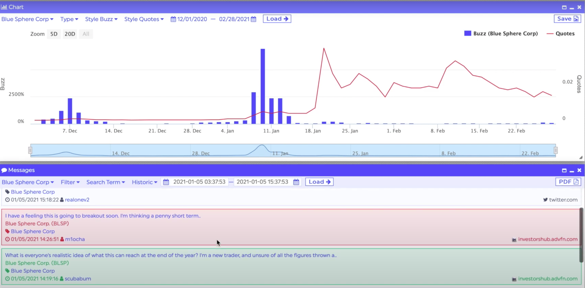

As professionals in the industry do not think NLP and social media would be suitable for stock price prediction as discussed, the following would explore how they would apply NLP and social media data to their professional work, so that relevant parties could understand the industry practice.

.
NLP is valuable if we see sentiment as a “proxy” and use it for surveillance
“Seen in every day, financial markets are not always rational and prices tend to deviate from their fundamental values.” Po said. Past research has already suggested there are irrational traders in the market, these traders may bring additional risk or premium to the market. As assets are driven by both the fundamentals and sentiment, researchers began to analyse the correlation between sentiment and market price.
“Although the models cannot capture the entire reality, they are essential in analysis.”, he stressed he does believe Natural Language Processing is essential to analyse sentiment although he criticised the student’s model. “It is essential we build an index or proxy figures to track the relative movement of the sentiment, rather than the actual sentiment itself.” he explained.
Po said there are very few companies analysing social media data in Hong Kong, but he heard of a company called StockPulse in Germany. According to its website, StockPulse monitors multiple worldwide online communities to create sentiment scoring based on the aggregate data. Even they have quantified the sentiment, Po recalled they have not yet used for predicting stock price. Instead of price prediction, Stockpulse’s product focuses on detecting suspicious wordings, such as bot disseminating false, manipulating or repetitive messages.
Stockpulse's social media surveillance product
.
Source : stockpulse.ai
I have sent email inviting StockPulse to an interview discussion, yet received no replies from them. Discussing with Po, I have searched online to double-check if they really have not provided stock price prediction solution. For solutions related to trading, it only shows “Trading Surveillance”. According to its website, “Trading surveillance” means detecting false, misleading or exaggerated comments in social media that are followed or led by noticeable stock price developments is an important objective in trading surveillance.
NLP help understanding financial reports with factor and sentiment classification
What Po observed in the industry is rarely would he see fund managers or quantitative investors directly built algo-trading program solely on one social media platform’s sentiment. Yet, NLP is still fairly possible to assist investment, such as assisting investors to understand the financial reports more efficiently.
Wizpresso's NLP-powered products
Source : Wizpresso
He demonstrated one of his company’s products, market intelligence search engine product “Discovery” to help financial analysts quickly spot on the right information regarding the financial status of the company. Po said they were using cutting-edged technology to classify factors into granular aspects such as ‘Business development’, ‘Financials’, ‘Accounting’, ‘Operations’ and more”.
“The models classify them automatically based on unique wordings of each factor.” Po explained. For example, in “Business development”, more commonly appeared words would be related to distribution processes, sales and marketing and growth strategies etc. While in “Operations”, the words would be related to company’s production and procurement process such as manufacturing, supply-chain, and working capital etc.
“Thanks to Hong Kong Exchanges and Clearing Limited (HKEX) and The Securities and Exchange Commission (SEC)’s strict regulation on reporting, financial reports are often well structured and normally the wordings of each factor are fairly predictable and consistent.” he explained why the machine learning model works much more stable in financial report’s text compared to social media data, which the text have less standardised structure and meaning.
“Even the model might somehow predict wrongly in our product, that does not do so much harm compared with the graduate’s algo-trading case you mentioned.” Po stressed.
Po said NLP helps understanding financial reports

.
As investment bank analysts often rely on sentiment of the financial reports to determine the parameters (such as growth rate of the company) in calculating the intrinsic value of firms, the product “Discovery” also facilitates that by calculating the sentiment of the financial report. By mapping sentences into “positive” and “negative”, users can locate to the respective sentences to investigate manually.
NLP help understanding financial reports with text summariser and keyword extraction
“Another less risky NLP application in financial service is text summariser.” he added. “Even for professional investment bankers, due diligence for an IPO is a lengthy and expensive process involving many parties.” he said. In addition, IPO verification is a tedious process that most juniors don’t enjoy doing, causing big firms talent retention issues.” Po explained why text summariser would help this situation for professional investors.
Text summariser illustration
“At the same time it helps retail investors too.” he added. They are unlike professional investors, who may not have long hours to analyse financial reports or may not be very familiar with companies. So a financial report summarizer would streamline his comprehension and shorten digestion time by giving him a sense of what the report would be about.
“A similar application to text summariser is keyword extraction, that would be even a shorter brief of what the companies are about”, he added. Take Tencent financial report as an example, it shows keywords like “Online Games”, “FinTech” and “Cloud and Other Business Services” etc, which allow us to quickly grasp the idea of Tencent’s business areas.
Using NLP to analyse company’s ESG rating and alert change in sentiment based on public news
On another hand, Tim (major US bank analyst) said nearly no banks would not use Natural Language Processing on trading directly, nor building index to track the sentiment of a certain social media. But he disclosed their bank would use Natural Language Processing to quantify ESG news and aggregate the score to find if there is discrepancy between the ESG rating based on public news versus what they have claimed in their ESG report.
He explained why not many banks are analysing social media data - First is the benefit-cost consideration, it is fairly easy to track the keyword trend on Google Trend, but if you build models to scrape the comments hence analyse them would be costly. Secondly, it is very difficult to define a context what the forums are talking about, model is poor in prediction if the context is ambiguous and ever-evolving.
Tim said Google Trend could already effectively tell them the social media trend
With focusing the ESG context in financial reports rather than random context from social media, Deutsche Bank also devised a way to evaluate sustainability reports using NLP algorithm – to ascertain whether commitments a firm made to reduce carbon emissions were correlated with achieved sustainability performance, according to according to Decimal Point Analytics in 2021. The algorithm also checked for mentions of numeric and quantitative terms (like 'first' and 'half'), and for use of active versus passive language. The bank discovered that firms using highly active and numeric language have, on average, a 74% chance of reducing their future emissions.
Also, with news as the data source rather than social media data, UBS wealth management has also used NLP in its investment due diligence to detect negative news via analysing documents fetched from search engines, which saves hours of time and frees up time for other critical tasks.
Using NLP to analyse company’s earning transcript
Similar to Wizpresso product to analyse financial reports, he said his bank and other banks like Goldman Sachs are using NLP to analyse earnings transcript. “Earnings transcript also has a more standardised structure and usually in a more official tone” he explained. Earnings call is a conference call between the management of a public company, analysts, investors, and the media to discuss the company's financial results during a given reporting period, such as a quarter or a fiscal year.
He said the analysts could be ascertain what to be expected in a earning transcript. Taking the following sentence, “Our total ad revenue in Q4 was $32.6B, which is up 20% year-over-year. The close of the year also marked the first time our business generated more than $100B in annual revenue. “ Similar phrases such as “20% year-over-year”, “generated more than $100B” would appear very frequently and commonly in every earning transcript, which can be easily identified by the model as positive without major problem.
With earning calls or transcripts, Global asset manager American Century Investments uses NLP to complement its research process with an NLP sentiment model that aims to detect deception in management commentary or language, according to Decimal Point Analytics in 2021. It evaluates the text for an indication of deception such as blame, deflection of responsibility characterized by the use of language such as ‘bad luck’, ‘challenging environment’, etc.
Hoi would keep an eye on other application of social media data
“Thinking back, I agree GME had a poor fundamental and social media data only could reflect the short-term fluctuation, but stock price would return to its fundamental at last.” Hoi agreed with what experts had warned him.
He added this incident of losing HKD$ 300,000 indeed taught him a lesson, although there were some academic researches showing high accuracy of prediction, he said he would be aware of the details before using NLP models for trading, as some researches’ methodology might not be accurate, and the results could be misleading.
Also, Hoi said he would not consider NLP for trading again, until the technology becomes more mature. While being shocked by how difficult it is to capture social media sentiment, he said he would keep exploring how alternative data could be applied in different fields.
For example, as he has been working in news agency and FMCG company as a IT trainee, he observe gauging the customers’ comments manually are very costly, he said he might learn from Wizpresso, to extract some keywords from their comments, so that they could automatically know what they are talking about through a dashboard. They can also count specific words, like how many times a product name is mentioned last week, so that they know which products have more attention, while some spark less discussion. Nonetheless, he said the feedback from Wizpresso inspired him of doing content recommendation using NLP. Like Wizpresso and YouTube, news agencies could recommend similar content to readers once they have read one, they could play a more active role with the technology of NLP.
“Although I lost some money in stock market, alternative data like social media to me are still very interesting, I would still keep an eye for those data, as I believe if I used them properly they still bring great value to us.” he stressed.